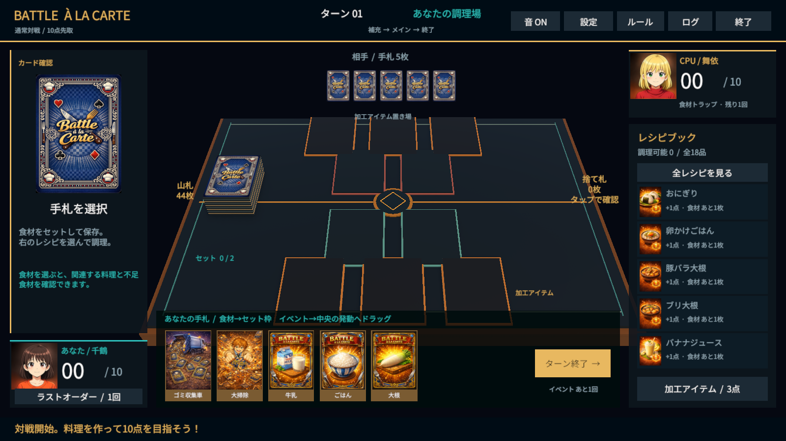

ANIANI ORIGINAL / NEW 3D EDITION
Battle à la carteUnity版（3D版）
3Dの調理台で、あなただけの一皿を。
材料カードを集め、料理を完成させて得点を競うCPU対戦ゲーム。
公開中＆追加要素可能性あり / Windows 64-bit・Android ARM64 / v0.3.0

Web版とは別の、新しい作品
Unityによる3D調理台と料理演出、CPU戦、ストーリーモード、プロフィール・戦績、ギャラリーを搭載。Web版のアカウントや保存データとは連携していません。オンライン対戦・共通あにあにコイン連携は未実装です。
v0.3.0 アップデート
CPUの補充後からターン終了までを6～7秒に調整し、イベント、料理、その他の行動へ待機を分散しました。CPUターン後のプレイヤードローは0.5秒間隔で表示し、演出が省略される問題も修正しています。
Android 8.0以降のARM64端末向け試験版を追加しました。版ごとの詳しい内容は、各ダウンロードZIP内のVERSION_NOTES.txtで確認できます。
遊び方と対応環境
Windows: ZIPをすべて展開し、BattleALaCarte.exeを起動してください。BattleALaCarte_Data、UnityPlayer.dllなどの同梱ファイルを移動・削除しないでください。
Android試験版: ZIPを展開し、BattleALaCarte.apkをAndroid 8.0以降のARM64端末へインストールしてください。
Android版はビルド内容を確認済みですが、物理端末でのタッチ、セーフエリア、復帰、性能は未確認です。WebGL・iPhone版は未提供です。
材料カードを空のセット枠へ、イベントカードを中央の発動ゾーンへドラッグします。その他の操作はゲーム内の案内を確認してください。